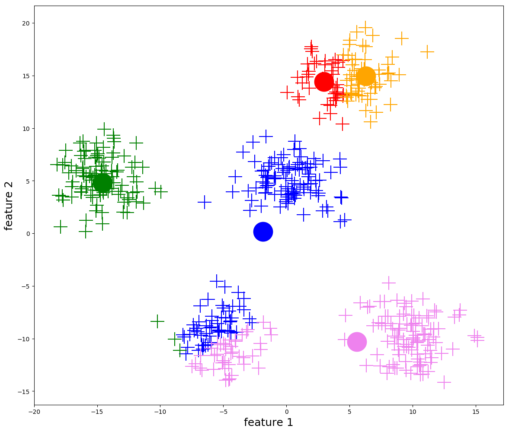

By the end of this lecture, you should be able to:
Formulate a clustering problem and explain its goals/applications.
Implement and apply k-means clustering to a dataset.
Measure clustering quality and choose an appropriate number of clusters for a given dataset.
Determine when clustering (via k-means) is more appropriate than dimensionality reduction (via PCA).
Identify when an alternative clustering algorithm or variant of k-means is more appropriate for a given dataset.
Motivation
In the last lecture, we explored dimensionality reduction (through PCA) as our first unsupervised learning method.
PCA, and its basis expansion/kernel variants, reduce the complexity of data by representing a \(\mathbb R^p\) set of covariates by a \(\mathbb R^k\) vector with \(k \ll p\).
In this lecture, we’ll explore an alternative simplification: representing a \(\mathbb R^p\) set of covariates by a \(\{1, 2, \ldots, k\}\) integer.
This integer represents a category, that each observation belongs to, which we refer to as a cluster label.
We refer to this unsupervised learning method as clustering.
To restate:
Clustering maps a set of covariates \(X \in \mathbb R^p\) to a discrete label \(C \in \{1, 2, \ldots, k\}\).
PCA (and its variants) maps a set of covariates \(X \in \mathbb R^p\) to a continuous vector \(Z \in \mathbb R^k, k \ll p\).
NoteIsn’t Clustering Just Classification?
While clustering and classification both assign labels to observations, there is a key difference.
In classification, we have labeled training data\(\mathcal D = \{ (X_1, Y_1), \ldots, (X_N, Y_N) \}\). We aim to learn a function to predict the responses \(Y_1, \ldots, Y_N\) from the covariates \(X_1, \ldots, X_N\).
In clustering, we do not have labeled training data; i.e. our training data are just the covariates \(\mathcal D = \{ X_1, \ldots, X_N \}\). The cluster labels do not correspond to any response; they are simply a way to describe the covariates by a much simpler representation (an integer label rather than a \(p\)-dimensional vector).
Consider the following synthetic dataset of \(n=140\) set of \(p=2\)-dimensional covariates: \(\mathcal D \in \{ X_1, \ldots X_{140} \}, X_i \in \mathbb R^2\).
These cluster labels that we assign to the points may or may not be semantically meaningful. However, it provides us with a way to analyze and summarize the data more easily, and gives us a toehold for discovering patterns and further analysis.
The Simplest Clustering Algorithm: K-Means
While there are many clustering algorithms, the simplest and most widely used is k-means clustering.
K-means clustering aims to partition \(n\) observations into \(k\) clusters such that the within-cluster variation is minimized.
Intuitively, we want to group the data so that the points in each cluster are as similar to each other as possible.
As with k-nearest neighbours and kernel methods, similarity will be measured through Euclidean distance.
Mathematical Formalization
As with (almost) all other learning procedures we’ve discussed, we will formalize this clustering procedure as an optimization problem.
Assume we have fixed \(k\), i.e. the number of clusters we hope to partition our data into. (We’ll discuss how to choose \(k\) momentarily.)
What we are trying to learn: \(\hat f_{\mathcal D}(X) : \mathbb R^p \to \{ 1, \ldots, k \}\), or some function that maps covariates onto clusters.
For any given \(\hat f_{\mathcal D}(X) : \mathbb R^p \to \{ 1, \ldots, k \}\), let \(C_1, \ldots, C_k \subset \mathcal D\) represent the clusters induced by this mapping; i.e.
The fraction \(1/2\) is for mathematical convenience (it does not affect the maximization), as will become clear shortly.
Cluster Centroids: A Crucial Simplification
This optimization problem is unwieldy, especially because we have to consider all pairwise distances between points in each cluster. (This is, worst case scenario, \(O(n^2)\) pairwise distances to consider!)
Fortunately, we can make use of the following identity to simplify from a pair-wise summation to a per-data-point summation:
If you’re confused about where this identity comes from, consider our favourite trick that we used when deriving the bias-variance tradeoff: adding and subtracting zero:
Just like we did with the bias-variance tradeoff, expand the square and you’ll find that the cross terms vanish!
Details
While we could go through this derivation step-by-step, it’s perhaps simpler if we replace the summations with expectations over the empirical distribution of points in cluster \(C_j\).
Even after simplifying the optimization problem using centroids, it is still impossible to solve it exactly. Instead, we rely on an iterative algorithm to approximate a solution.
To get \(f_{\mathcal D}^{(1)}(X)\) from \(f_{\mathcal D}^{(0)}(X)\), we repeat steps 2 and 3 above.
More generally, we repeat steps 2 and 3 until the cluster centroids are stable (i.e. when the distance that the cluster centroids change is \(< \epsilon\) for some pre-defined constant \(\epsilon\). Most implementations will define this constant for you.)

Visualization of k-means iterations (from https://ai.plainenglish.io/)
While this algorithm does not guarantee that we find the optimal clustering assignment, it does guarantee that the within-cluster variation \(\sum_{j=1}^k |C_j| W_j\) decreases at each iteration, and thus will eventually converge to some (possibly local) minimum.
WarningK-Means May be Sensitive to Initialization
Because k-means starts with a random initialization of the cluster centroids, it may converge to different clustering assignments on different runs. Most implementations of k-means (including R’s built-in kmeans function) will try many random initializations and return the clustering assignment with the lowest within-cluster variation.
However, note that you may get different clustering assignments on different runs of k-means, especially if the clusters are not well-separated.
Choosing the Number of Clusters \(k\)
So far, we’ve assumed that the number of clusters \(k\) is fixed. Now we’re going to discuss how to perform model selection to choose the best value of \(k\).
Since this algorithm is an unsupervised method, there’s not really a notion of risk (or cross-validation for that matter), so we’re going to have to rely on some heuristic methods to choose \(k\).
What Do We Want From Our Clustering?
In general, there are three key desiderata for our clusters. We’ve already talked about one of them:
Points within clusters should be similar to each other. This quantity is exactly what k-means optimizes for:
Points in different clusters should be dissimilar to each other. This quantity is not directly optimized by k-means, but is still important. It is measured by the between-cluster variation quantity, which measures the weighted average distance between pairs of cluster centroids:
You can guess what each of these variable names mean ;)
We want to minimize within-cluster variation and maximize between-cluster variation. However, these quantities will often be at odds with one another.
NoteQuiz
As the total number of clusters \(k\) increases…
Will the within-cluster variation \(W\) increase or decrease?
Will the between-cluster variation \(B\) increase or decrease?
Answer
As we add more clusters, each cluster will have fewer points. Thus, the points in each cluster will be closer together, and the within-cluster variation decreases.
As we add more clusters, the between-cluster variation increases! (In my opinion, the intuition for this idea is best understood in reverse. \(B\) essentially measures the empirical variance of our \(X_i\) if we were to replace each \(X_i\) with its cluster centroid \(\mu_{f_{\mathcal D}(X_i)}\). As we decrease the number of clusters, we are replacing many \(X_i\) with the same centroid, which reduces the empirical variance of the data.)
If you want to understand see this relationship more rigorously, try to describe it via the law ot total variance.
A simple heuristic to balance these three criteria is the following ratio:
\[ \mathrm{CH} := \frac{B/(k-1)}{W/(n-k)}. \]
Note that both \(B\) increases and \(W\) decreases as \(k\) increases.
The normalization of both factors by \(k-1\) and \(n-k\) ensures that we don’t just keep increasing \(k\) to maximize this quantity.
This quantity is known as the Calinski-Harabasz (CH) index.
NoteK-means Clustering With Model Selection
For all \(k \in \{2, 3, \ldots, k_{\max}\}\) (where \(k_{\max} < n\) is some maximum number of clusters we want to consider):
Run k-means clustering with \(k\) clusters to get cluster assignments \(C_1, \ldots, C_k\).
Compute the CH index for this clustering assignment:
Choose the number of clusters \(\hat k\) that maximizes the CH index.
K-Means vs PCA
We now have learned about two unsupervised learning methods: PCA and k-means clustering.
Both are useful when you want to simplify a complex dataset for further analysis but you don’t have labeled training data.
However, when should you use one method over the other?
The answer depends on your analysis, goals, and the data. If you want to compress the data into a distinct number of categories, clustering is likely more appropriate.
However, if you want to represent data on a spectrum (or to visualize the data), PCA is more important.
Example clustering problem: You are studying birds, and you have collected measurements of their beak length, beak depth, wing length, and weight. You suspect there might be several distinct species of birds in your dataset. Since species are distinct categories, it makes sense to use clustering to group the birds into categories that may correspond to species or sub-species.
Example dimensionality reduction problem: You are studying mental health data. You have collected survey responses from individuals on various aspects of their mental health, including stress levels, anxiety, depression, and overall well-being. You want to reduce these multiple dimensions into a smaller set of underlying factors that capture the main variations in mental health. Since many mental health factors exist on a spectrum, dimensionality reduction is more appropriate here.
Other Clustering Variants
There are many alternative flavours of clustering that can be more appropriate for different applications/data types:
Hierarchical clustering organizes clusters in a tree-like structure, creating hierarchical relationships between the different clusters. This algorithm is especially popular for biological data.
Gaussian mixture models are a generalization of k-means where the cluster distances are generalized and cluster membership becomes “fuzzy” or probabilistic. You may learn about this method in a more advanced machine learning class.
Spectral clustering is similar to k-means clustering, except it is designed for graphical data (i.e. if your data is a social network, a “musical influence” chart, etc.)
You don’t need to know any of these, but be aware that they’re out there. Also, if k-means doesn’t immediately work for your data, with some googling you’ll likely find a variant that does!
Summary
Clustering is an unsupervised learning method that maps covariates \(X \in \mathbb R^p\) to discrete cluster labels \(C \in \{1, 2, \ldots, k\}\).
K-means clustering is a simple and widely used clustering algorithm that aims to minimize within-cluster variation, as measured by Euclidean distance.
the centroids to be the mean of the points in each cluster.
The number of clusters \(k\) can be chosen using heuristic methods like the Calinski-Harabasz index.
There are many other clustering algorithms and variants that may be more appropriate for different data types (e.g. graph data) and applications (e.g. biological data).